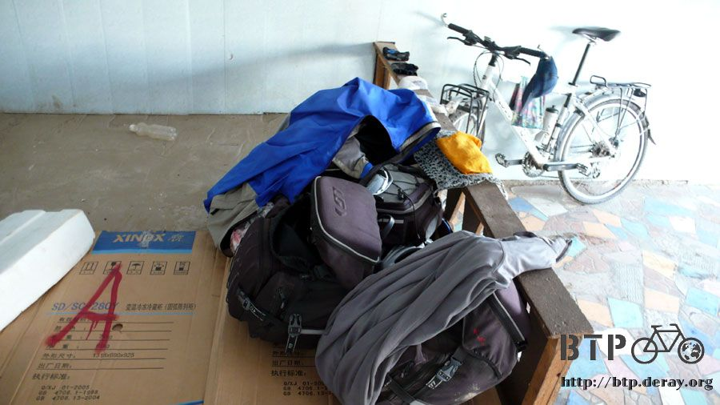
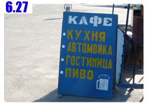

荒原、上坡、烈日
一夜睡得超安穩，有如陷入棉花堆中一樣沉沉的入眠，早上五點多就乖乖爬起來，輕聲的不吵醒還在睡覺的發勒哈特和他的家人。
這個家養了一隻叫做阿爾法的狗，第一次看到我就吠個不停，還猛的衝過來咬了鞋子一口，居然是咬鞋子不是咬我的腳，看來是隻笨笨的狗。
偷偷看一下阿爾法有沒有在外面，以免等一下真的被咬到，確定安全之後到外頭洗臉刷牙，然後回房間整理遊記。

弄到九點多剛好收工，發勒哈特上來叫我去吃飯，這是他的哥哥以及哥哥的女兒，很可愛。
哥哥叫做『修後拉特』，小女兒則是『亞斯敏娜』，九個月大。
將房間收拾乾淨，東西拿回樓下停小多的地方，整理完畢之後就可以準備吃早餐了。
早餐吃得跟昨天的晚餐一樣，就是那個有點像是綠豆或是什麼東西的 『葛利巨嘎』，配上熱紅茶或是熱奶茶。
之前都是喝鹹的奶茶讓我很不習慣，其實哈薩克人喝的奶茶也有甜的，桌上都會放著方糖或是白砂糖，想喝多甜自己加。
配上又大又硬的大餅、一些小糖果和餅乾。
如果我待久一點，午餐應該也是吃差不多的東西。
餐桌是露天的，設置在外面的樹下，樹上結了滿滿的杏子，吃飯的時候隨時都會咚的掉一顆下來砸在任何地方。
會不會被杏子砸到完全靠的是運氣，砸到也沒關係，頭揉一揉，杏子撿起來就可以吃了。
吃飯的時候拍了很多發勒哈特家人的照片，白頭髮的是一家之主的爸爸『莫夫塔』，紅頭髮是昨天邀我進來吃飯和睡覺的媽媽『瑪雅』，媽媽是俄文老師。
家裡一共有五個小孩，最會說英文的大女兒正好不在家，人在阿拉木圖工作，其他所有的人通通都見到了。

這邊似乎沒有相機，拍照不太容易，所以等我到了大城市，我會把這些照片洗出來，然後寄給他們。
媽媽用很漂亮的字跡(不虧是老師)在筆記本裡留下了地址和電話，謝謝你們讓我在這裡住一晚上，無以回報，這些照片我一定會寄送到的。
在我整理行李的時候，小多借他們兄弟倆騎一下，其實大家都會騎自行車嘛，要找到不會騎的人還真困難。
照片由右至左是發勒哈特(弟弟)、亞斯敏娜(女兒)、修後拉特(哥哥)、阿賓娜(老婆)
昨天沒水的時候是用一般的水龍頭裝水喝，今天早上要出發的時候，我也問發勒哈特哪邊可以裝水，他也是用水龍頭裝水給我喝。
這麼看來哈薩克的水應該是可以生飲才是，這是好消息，以後看到水龍頭就等於看到生命的希望了。
裝滿了三個水瓶的水之後，再裝滿一個一公升、昨天喝光的雪碧瓶子，今天要騎的路況完全不了解。
是上坡還是下坡、路上有沒有城鎮、路好不好走，都一點概念也沒有，只知道要走一百五十公里才有地方可以住。
總之水多帶一點就沒錯，雖然一開始很重，但是沒多久就會喝光光了。
這些羊群後面有房子的建築，這個地方就是昨天再騎三公里就會到的城鎮，因緣際會之下沒有去住，今天就不繞進去了。
有點搞不清楚哈薩克人是窮還是有錢，牙齒要是有缺的話，大家都是補金牙耶，已經看了好多個滿口金光閃閃的人。
哈薩克的狗狗很多，在中國騎了兩個月的車，遇到的狗用五根手指頭就可以數出來，中國的路上看不到半隻流浪狗，該不會全都被吃掉了吧~_~
既然有狗狗，那我騎車就會被狗追，好加在這些狗都是追好玩的，不會真的追得很近來咬我，通常追個一兩百公尺就會放棄。
今天一整天都再爬坡，緩上坡、陡坡都有，真得很累，不是開玩笑的。
因為對路況不了解，出發前對於今天要面對的是什麼樣的情況都沒有心理準備，這些路看起來雖然都是平的，但其實都是上坡。
停下來休息喝口水的時候，瓶子不小心掉到地上，就不停的往後面滾，越滾越快，不趕快回頭撿起來的話就少一個水瓶可以用了。
哈薩克的交通牌子很有趣，只要是上坡路，通通都是12度的陡坡，今天遇到的都沒有例外，大概這樣比較方便製作吧。

白天騎車的時候，看到路旁有飲料的空罐子，我都會跟自己說，
『你看，有空罐子，這就是上天的提示，代表前面不遠的地方一定有商店。』
結果往前再騎一整天還是荒原。
騎了一整天的車，累得要命但是騎不到八十公里，一路上只有老鷹雕像這一段是下坡路，其他都是累得跟狗一樣的上坡路。

一路上真的是什麼鬼都沒有，唯一會出現的建築物是這種大概每五公里一個的白色小房子，就是電話亭的大小，不知道是幹嘛用的。
荒原中有一些墓碑跟獻花，樣式差異都很大，停下來看著這些墓碑，好像自己就被埋在裡面一樣，因為我感覺已經要死掉了。
緩坡爬完之後，就是要爬超陡坡，陡到一路上都有大貨車拋錨在路邊，一開始勉強還騎的動，後來不行了就下來乖乖用牽的。
太陽很大，水消耗的超快，之前在中國的時候是每騎三十公里喝光一瓶水，現在騎不到十公里就喝光一瓶水了，而且喝再多還是覺得渴。
很希望有個樹蔭或是乘涼的地方，可是一整天下來連個加油站也沒看到，全部都是荒原，有時有點綠意、有時是光禿禿的地，但相同的都是沒有人跡。
好不容易看到一個大大的牌子，配合太陽照射的角度正好有個影子可以讓我躲在這乘涼，牽著小多過去，坐在影子下休息，笑不出來，因為太累了。
腳上本來穿著襪子的部分，有些紅腫，應該是騎車流汗的緣故，長褲將汗排到褲管的位置，然後就被襪子給吸走，接觸襪子的皮膚就過敏紅腫。
昨天洗過澡之後塗了小護士，睡醒已經消腫，但還是有紅紅的斑點，今天襪子拉得很低，跟長褲沒有重疊的部分，這陣子都會這樣子穿襪子。
就算騎車的時候會露出一小段的腳踝也無所謂，趕緊恢復比較要緊。
躲在這個牌子後面半個小時，想睡也睡不著，蒼蠅太多，嗡嗡的飛來飛去，又老是往耳朵那邊鑽，光是趕蒼蠅就夠受的了。
接著往前騎，無止無盡的上坡路，本來覺得今天騎一百五十公里到那個可以住的地方應該不是難事，事實上則是非常非常的有挑戰性。
很快的又要進入夕陽西下的時候，前方看去全部都是山脈，不論往哪邊騎都是要爬山的命。
今天如果不想睡在山裡面，那就是早一點休息睡在路邊的荒原上。
翻過一個斜坡之後，赫然出現一個城鎮的牌子，地圖上跟道路指示牌都沒提到這個地方，真是有種賺到的感覺！
不管它有沒有旅館，有商店能讓我買飲料就已經足夠了。
在一間有很多種招牌的地方，雖然看不懂在寫些什麼，先把小多牽上去再說。
外頭是間商店，東西不多，可是喝的到不少，買了一大瓶紙盒裝的蘋果汁，三兩下就喝光。

停小多的地方有洗臉台，這可不是自來水，水都是放在裡面的儲水箱，用完了還得手動補水，而髒水則流到底下的水桶中，拿去澆花，一點也不浪費。
舒舒服服的洗把臉，解決難受的口渴，再來就是肚子餓的問題。
今天除了早餐在發勒哈特家裡吃過才出發之外，一路上就是喝水、吃餅乾、吃融化的巧克力，就這些東西而已，也撐了一整天。
口渴的時候根本不會覺得肚子餓，因為口渴的感覺太強烈了，想喝水的慾望足以壓過所有其他的渴望。
跟雜貨店的老闆娘比了吃飯的手勢，問這邊有餐廳嗎？結果這一棟裡面就是餐廳。
進去裡面坐下來，我看著服務生傻笑，她也看著我傻笑，該怎麼點菜呢？
她先比了喝東西的動作，我以為是問我要不要喝湯，就說好，然後送上來了一壺熱奶茶跟幾塊乾麵包。
光吃這個怎麼夠，換我比一個很餓的動作，問問看有沒有別的東西可以吃，什麼都好，然後又來了一碗湯餃。
真是開心，有熱騰騰的美食可以享用了～
吃了兩口，有別的店員用很奇怪的中文問我『你到這裡做什麼？』
中文也能通？原來是新疆人，到這邊已經五年，因為沒有人跟她說中文，所以中文的發音和文法都變得很奇怪，但還是能溝通。
聽到熟悉的語言真令人感動，除了聊兩句之外，順便又問了還有沒有別的東西可以吃？然後又送來三個好吃的薄皮肉包子。
這樣一頓吃下來，居然也才275元而已，或許哈薩克的物價並沒有我想像中那麼樣的高不可攀。
還是因為我還沒有進入城市，這兩天都在偏僻的小鎮的緣故？
吃飽了也喝足了，在小鎮逛逛，這邊是一個很小的地方，一條馬路旁邊幾棟做生意的房舍就這樣而已。
離馬路遠一點的部分有一間廁所，想方便的話不成問題，只是要先搞清楚牆壁上那個標誌，男生跟女生到底該怎麼分。
晚上就用洗手檯的水將身子擦一擦，越來越髒又都是汗的衣服就晾著，車子停在這邊的屋簷底下，包包卸下來在水泥台上。
問過餐廳和雜貨店的老闆，晚上我在外頭打地舖睡覺是OK的，免費。

外面的牆壁很好心的還有插頭可以用，插上電之後就可以整理照片和寫遊記。
今天住在餐廳門口，用電腦的時候身旁圍了很多小朋友跟大人。
比手勢問了一下接下來要走的路怎麼樣？他們的回答的手勢像雲霄飛車那樣，往下然後往上接著再往下，看來明天是要爬很多座山嶺。
本來以為身上沒帶多少錢，應該很快就會花光，但是因為不用住宿的緣故，開銷出奇的低。
而且今天決定以後看到商店也不要再買汽水喝了，真得很渴的話那不如買果汁喝還比較有營養。
白天熱得要命，太陽下山之後稍微涼快一點，還不到會冷的地步，穿著短褲短袖剛剛好，很有夏夜舒服的感覺。
把帳篷拿出來不用睡袋直接睡在裡面，不要讓蚊子跟蒼蠅來打擾就可以睡一個好覺。
多謝這個讓我在屋簷下打地鋪的店家，晚上我會打呼小聲一點。
雖然跟上次一樣是露營，在這次是在有燈火以及屋頂的地方，感覺令人心安很多。
但是相對的也帶來很多困擾，並不是大家圍圈圈參觀我睡覺的樣子，事實上沒有人對我感到好奇，而是這間餐廳是深夜不打烊的那種。
所以整個晚上都有路過的司機會停下車，發出『逼~碰~機~搭』的煞車聲，然後『碰碰碰』拍木頭門，發現沒鎖之後就大聲的點餐，然後大聲的聊天。
吃飽之後終於又繼續上路，『低~嘎~碰碰』的引擎啟動聲，車子駛遠之後終於能給我片刻的寧靜，然後又是下一組的客人到來。
剛入夜時雖然不冷，所以就懶得開睡袋，因為帳棚跟睡墊都很好收拾，每次收睡袋都要弄老半天，想說既然不冷那就省點事情。
結果到了半夜三點左右，突然就變得很冷很冷，探出帳篷從包包裡翻出厚的長袖衣服，穿上之後繼續睡覺。
整個晚上就這麼翻來覆去，總計加起來睡著的時間不超過兩個小時，眼睛腫得跟餐廳裡面那位值夜班的女侍者一樣。
繼續閱讀：6.27 招牌中的棲身之所

哈薩克-堅戈－ 1：0.26 台幣
6.26 |
總計：475元 |
一公升蘋果汁200元、晚餐奶茶、麵包、湯餃、包子275元 |
|